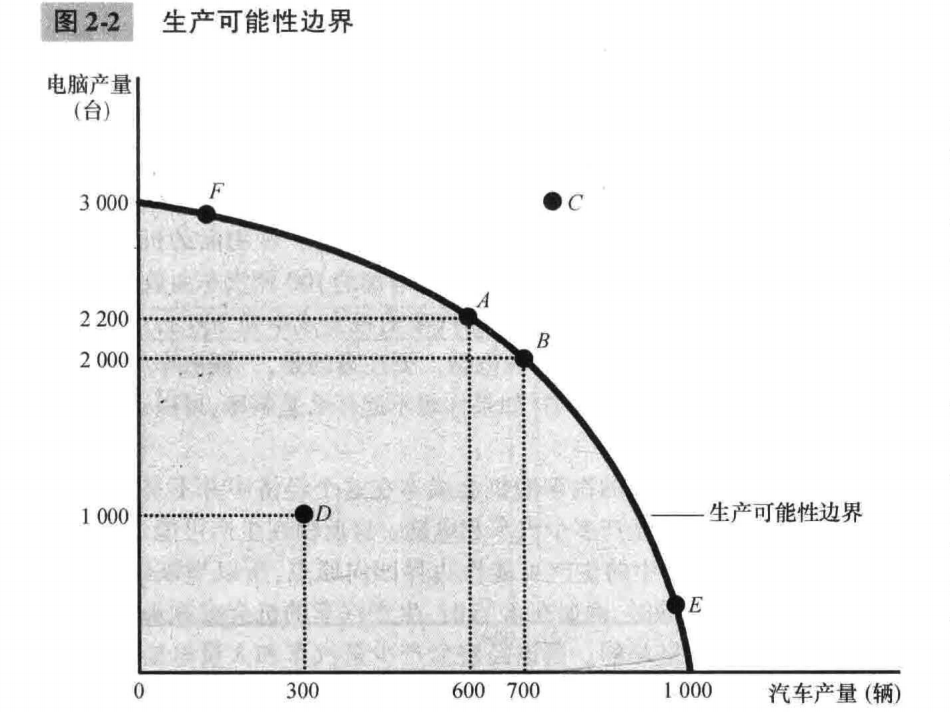

第2章 像经济学家一样思考¶
2.1 作为科学家的经济学家¶
经济学家努力以科学家的客观性去探讨他们的主题，方法大致相同：先提出理论，再收集数据，然后分析数据，以努力证明或批驳他们的理论。
科学的本质是 科学方法 ——冷静地建立并检验有关世界如何运行的各种理论。
- 2.1.1 科学方法：观察、理论和进一步观察
在经济学研究中，进行实验往往是不可能的。经济学家通常只能使用这个世界向他们提供的数据。
- 2.1.2 假设的作用
假设可以使复杂的世界简单化，从而使解释这个世界变得更为容易。
- 2.1.3 经济模型
2.1.4 我们的第一个模型：循环流量图¶

循环流量图（circular-flow diagram）：一个说明货币如何通过市场在家庭与企业之间流动的直观经济模型。
在此之中，经济被简化为只由两类决策者——企业和家庭——组成。企业用劳动、土地、和资本（建筑物和机器）等投入品来生产物品与服务。这些投入品被称为 生产要素 。家庭则拥有生产要素并消费企业生产的所有物品与服务。
两类市场：
- 在物品与服务市场上，家庭购买企业生产的物品与服务
- 在生产要素市场上，家庭向企业提供用于生产物品与服务的投入，家庭是卖者，企业是买者。
两个环形：
- 内部环形：投入与产出的流向
- 外部环形：相应的货币流动
2.1.5 我们的第二个模型：生产可能性边界¶

生产可能性边界（production possibilities frontier）：表示在可得到的生产要素与生产技术既定时，一个经济所能生产的产品数量的各种组合的图形。
在上述例子中，则是汽车与电脑的数量组合。
- 如果一个经济从它可以获得的稀缺资源中获得了它能得到的全部东西，就称这种结果是有效率的。
- D点代表了一种无效率的结果。
用电脑数量来衡量的汽车的机会成本在这个经济中并不是不变的，而是取决于该经济要生产多少汽车和电脑，这也反映在生产可能性边界的形状上——斜率。
经济学家认为，生产可能性边界通常是这种凹向原点的形状（如图2-2）。
- 当经济把大部分资源用于生产电脑，如F点时，最适于汽车生产的资源，如熟练的汽车工人，都会被用于电脑行业。由于这些工人可能并不擅长生产电脑，多生产一辆汽车只会引起很小的电脑产量的减小。
在F点，用电脑衡量的汽车的机会成本是较小的，而且生产可能性边界较为平坦。
- 而在E点，最适合生产汽车的资源已经用于汽车行业，多生产一辆汽车就意味着把一些最好的电脑技工从电脑行业中转移出来，让他们称为汽车工人。结果导致多生产一辆汽车就意味着汽车产量有相当大的减少。
此时生产汽车的机会成本很搞，而且生产可能性边界是陡峭的。
但随着时间的推移，这些权衡取舍可能改变。比如电脑行业的技术进步使得行业在生产任何一个既定的汽车量时，都可以生产比以前更多的电脑。生产可能性曲线一端不变，另一端向上移动。
生产可能性边界简化了复杂的经济，以便强调一些基本但极为重要的概念：稀缺性、效率、权衡取舍、机会成本和经济增长。
2.1.6 微观经济学与宏观经济学¶
微观经济学（microeconomics） 研究家庭和企业如何做出决策，以及它们如何在市场上相互交易的学科。
宏观经济学（macroeconomics） 研究整体经济现象，包括通货膨胀、失业和经济增长的学科。
由于整体经济的变动产生于千百万个人的政策，所以不考虑相关的微观经济决策而要去理解宏观经济的发展是不可能的。
2.2 作为政策顾问的经济学家¶
当经济学家试图去解释世界时，他们是科学家；当经济学家试图去改善世界时，他们是政策顾问。
2.2.1 实证分析与规范分析¶
关于世界的语言表述有两种类型：
-
实证表述（positive statements） 试图描述世界是什么样子的
-
规范表述（normative statements） 试图描述世界应该是什么样子的
在语言学和逻辑学中，“positive statements”通常指的是肯定的陈述或命题，即那些直接陈述事实或现象的句子，而不包含否定或假设的成分。例如，“今天是晴天”就是一个肯定的陈述，因为它直接描述了一个事实，没有否定或假设的内容.
“实证表述”中的“实证”一词在学术和科学领域中通常与“经验”或“观察”相关，强调通过观察和实验来验证陈述的真实性。因此，“实证表述”可以理解为那些基于观察和经验的肯定陈述，即通过实证研究或实证数据来支持的陈述.
例如，在科学研究中，一个关于某种药物疗效的实证表述可能是：“根据临床试验数据，该药物对治疗某种疾病有效。”这个陈述是基于实际的观察和实验数据得出的，因此被称为实证表述.
所以，“positive statements”翻译成“实证表述”是因为它强调了陈述的肯定性和基于实证数据的支持，而不是仅仅从语言学的角度来理解“positive”为“肯定的”或“积极的”。
实证表述与规范表述之间的关键区别是我们如何判断它们的正确性：
-
检验 事实证据 来确认或否定实证表述
-
规范表述的评价则涉及 事实和价值观
但在脑海中，它们是互相关联的，恰如世界观和方法论。
经济学的许多内容是实证的：它仅仅在努力解释世界如何运行。但那些运用经济学的经济学家们通常由规范的目的：它们想知道如何改善经济。前者是科学家，后者是政策顾问。
2.2.3 为什么经济学家的建议并不总是被采纳¶
-
总统听取了经济顾问关于什么政策最好的意见后，还要听取其他顾问的相关意见。
-
公关顾问会告诉他如何向公众解释该政策，并努力提前考虑带来严重挑战的误解。
-
新闻顾问会告诉他的新闻媒体如何报道提议，以及哪些提议最有可能出现在全国报刊的社论上。
-
法律顾问会告诉他议会将如何评价这个提议，议会议论将提出哪些修正，以及议会通过总统提议从而写进法律的可能性有多大。
-
政治顾问会告诉他哪些集团将支持和反对他，该提案如何影响他在不同集团中的形象，以及是否会影响人们对总统其他政策主张的支持力度。
2.3 经济学家意见分歧的原因¶
两个根本原因：
-
经济学家可能对世界如何运行的不同实证理论哪一种正确有着不同的看法
-
经济学家可能有不同的价值观，因此对政策应该努力实现的目标有不同的规范观点
讨论别的原因：
- 科学判断的不同
经济学是一门年轻的科学，仍然有许多意见需要探讨。经济学家有时意见不一致，是因为他们对不同理论的正确性或对衡量经济变量如何相关的重要参数的大小由不同的直觉。
-
价值观不同
-
感觉与显示
虽然经济学家之前有不可避免的分歧，但是经济学家之间能够达成共识的程度远远超过了人们有时认为的那样。
2.4 出发吧¶
前两章介绍了经济学的思想与方法，下一张开始更详细地学习经济行为和经济政策原理。
经济学研究似乎并不需要任何极高的特殊天赋。与更高深的哲学或纯科学相比，经济学难道不是……一门极其容易的学科吗？它是一门容易的学科，但这个学科中很少有人能出类拔萃！对这个悖论的解释也许在于，杰出的经济学家需要具有罕见的各种天赋的组合。在某种程度上，他应该是数学家、历史学家、政治家和哲学家。他必须了解符号并用文字将其表达出来。他必须根据一般性来深入思考特殊性,并以同等灵活的思想触及抽象与具体。他必须在研究现在时同时参考过去、着眼未来。他必须考虑到人性或人的制度的每一部分。他必须同时保持坚定而客观的情绪，要像艺术家一样超然脱俗,但有时又要像政治家一样脚踏实地。
课后¶
快速单选¶
-
经济模型是 经济某些方面的简单再现
-
循环流量图说明在生产要素市场上，家庭是卖着，企业是买者
-
生产可能性边界内 的一点是 可能，但无效率 的
-
一个经济生产热狗与汉堡包。如果一项热狗对健康非常有利的发现改变了消费者的偏好，它将 使经济沿着生产可能性边界变动，而无法扩大生产可能性边界
-
以下所有话题都在微观经济学研究范围内：香烟税对青少年吸烟行为的影响，微软的市场势力在软件定价中的作用，反贫困计划在减少无家可归者中的效率，但 政府预算赤字对经济增长的影响 不是
-
区分实证表述与规范表述
X法将减少国民收入：实证表述
X法是一项好的立法：规范表述
国会应该通过X法：规范表述
总统应该否决X法：规范表述
内容提要¶
经济学家们努力以科学家的客观态度来研究他们的学科。像所有科学家一样，他们做出了适当的假设并建立了简化的模型,以便理解我们周围的世界。两个简单的经济模型是循环流量图和生产可能性边界。
经济学可划分为两个分领域:微观经济学和宏观经济学。微观经济学家研究家庭和企业做出的决策以及家庭和企业在市场上的相互交易。宏观经济学家研究影响整体经济的力量和趋势。
实证表述是关于世界是什么的论断。规范表述是关于世界应该是什么的论断。当经济学家做出规范表述时,他们的行为更像是政策顾问而不是科学家。
经济学家们向决策者提出的建议之所以有时会相互矛盾,不是因为科学判断的差别,就是因为价值观的差别。在另一些时候,经济学家提供的建议是一致的但由于政治过程施加的力量和约束,决策者可能选择不理会这些建议。
关键概念¶
循环流量图
微观经济学
生产可能性边界
宏观经济学
实证表述
规范表述
复习题¶
-
经济学在哪些方面是一门科学？
经济学作为⼀门科学，主要体现在以下三个方面：
（1）以科学⽅法来研究和探讨经济问题
科学的本质是科学⽅法——科学地提出理论，收集数据资料，并分析这些数据资料以努⼒证明或否定提出的社会理论。正如其他学科⼀ 样，经济学观察⼀个事件，建⽴⼀种理论，并收集数据来检验这种理论。但是，收集数据来检验经济理论是困难的，因为经济学家通常不 能从试验中创造数据。这就是说，经济学家不能仅仅为了⼀种理论⽽控制经济。因此，经济学家通常采⽤从历史事件中收集到的数据。总 之，经济学家研究经济的过程和⽅法与⾃然科学的科学家研究⾃然是⼀样的，只不过经济学家进⾏实验的能⼒受到限制，并且要依赖⾃然 科学实验的发展。
（2）利⽤假设来解释世界
假设可以使解释这个世界更为容易。例如，为了研究国际贸易的影响，经济学家可以假设世界只由两个国家组成，⽽且每个国家只⽣产两 种产品。通过理解只有两个国家和两种产品的这种假想世界中的国际贸易，可以更好地理解⼈们⽣活在其中的、更复杂的现实世界中的国际贸易。
（3）以科学家的客观性来探讨经济学的主题
经济学家努⼒以科学家的客观性来探讨他们的主题。像所有科学家⼀样，他们做出了适当的假设并建⽴了简化的模型，以便解释周围的世 界。经济学家使⽤由图形和⽅程式组成的经济模型，经济模型根据假设建⽴，⽽且是现实经济的简单化。
-
为什么经济学家要做出假设？
经济学家之所以要做出假设，其原因有以下三点：
（1）经济学家之所以做出假设是为了研究问题的⽅便。
通过对不同的问题做出不同的假设，略去对问题的答案没有实质影响的因素，突出 实质性的内容，可以集中思考，从⽽更为容易地解释问题，得出结论。⽽且通过假设略去对问题没有实质影响的因素并不会影响最终的结 论，从⽽可以得出正确结论乃⾄经济规律来指导⼈们的⽣产⽣活。
（2）假设可以使解释这个世界更为容易。
例如，为了研究国际贸易的影响，可以假设世界只由两个国家组成，⽽且每个国家只⽣产两种产 品。当然，现实世界由许多国家组成，每个国家都⽣产成千上万的不同类型产品。但通过假设两个国家和两种产品，就可以集中进⾏思 考。⼀旦理解了只有两个国家和两种产品的这种假想世界中的国际贸易，就可以更好地理解⼈们⽣活在其中的、更复杂的现实世界中的国 际贸易。
（3）经济学家⽤不同的假设来回答不同的问题。
假设要研究当政府改变流通中的货币量时经济中会出现什么情况，这种分析的⼀个重要内 容是价格会做出什么反应。经济中的许多价格并不经常变动，如报摊上的杂志价格需要好⼏年才能变动⼀次。了解了这⼀事实后，当研究 政策变动在长短不同时间中的影响时就会做出不同的假设。为了研究这种政策的短期效应，可以假设价格变动并不⼤，甚⾄可以做出极端 ⽽⼈为的假设：所有价格完全是固定的。但是，为了研究这种政策的长期效应，可以假设所有价格完全是有伸缩性的。正如物理学家在研 究⼤理⽯下落和⽓球下落时⽤了不同的假设⼀样，经济学家在研究货币量变动的短期与长期效应时也⽤了不同的假设。
-
经济模型应该准确地描述现实么？
（1）经济模型的含义：
经济模型是指⽤来描述与所研究的经济事物有关的经济变量之间相互关系的理论结构，是现代西⽅经济理论的⼀种主要分析⽅法，是⼀种 对现实世界的简化。经济模型主要⽤来研究经济现象间互相依存的数量关系，其⽬的是反映经济现象的内部联系及其运动过程，帮助⼈们 进⾏经济分析和经济预测，解决现实的经济问题。经济模型本⾝可以⽤带有图形、图表或⽂字的⽅程来表⽰。
（2）经济模型不应该准确地描述现实，原因如下：
经济模型不可能准确地描述现实，也不需要准确地描述现实。现实世界太复杂，是由各种主要变量和次要变量构成的，错综复杂，因⽽除 ⾮把次要的因素排除在外，否则就不可能进⾏严格的分析，或者分析太复杂以致⽆法进⾏。通过做出某些假设，可以排除许多次要因素， 从⽽建⽴起模型。这样⼀来，便可以通过模型对假设所规定的特殊情况进⾏分析。因此，模型通过忽略掉⼤量不会对研究结果有实质性影 响的细节来说明什么是真正重要的。模型是为了增进⼈们对现实的理解⽽简化了的现实
-
举出⼀种没有包括在简单的循环流量图中的经济关系
简单的循环流量图中没有包含政府部门和国外经济部门。
（1）现实经济⽣活中，政府在经济中发挥着重要作⽤：
①在微观层⾯，政府通过公共管制来对企业的经营决策做出某些限制，纠正市场 缺陷、制⽌竞争失灵。其措施主要有两种：⼀是价格管制，即由政府规定垄断企业产品的价格，企业只能按政府规定的价格销售产品；⼆ 是反垄断，由政府通过⽴法禁⽌独家或少数企业控制价格的⾏为。
②在宏观层⾯，政府通过财政政策和货币政策来实现经济增长、充分 就业、物价稳定和国际收⽀平衡。财政政策是指政府变动税收和⽀出以便影响总需求进⽽影响就业和国民收⼊的政策。货币政策是指中央 银⾏变动货币供给量，影响利率和国民收⼊的政策措施。
（2）世界经济是开放的，⼀国与他国展开国际贸易，从⽽使得各⾃的状况变得更好。由于资源或技术限制，⼀国不可能⽣产出所需的所有 商品，它必须与其他国家进⾏国际贸易，进⼜⾃⼰急需的商品，同时向世界其他国家出⼜⾃⼰的产品。
-
画出并解释⼀个⽣产⽜奶与点⼼的经济的⽣产可能性边界。如果⼀场瘟疫使该经济中的⼀半奶⽜死亡，这条⽣产可能性边界会发⽣怎样的变动？
（1）⽣产可能性边界的含义：略
（2）⽜奶和点⼼的⽣产可能性边界是指在其他条件（如技术、要素供给等）不变的情况下，⽣产⽜奶和点⼼所能达到的最⼤产量的组合。 如图2-4所⽰，假设在正常情况下，将可能得到的所有资源全⽤于⽣产点⼼，可以⽣产300千克；如果全⽤于⽣产⽜奶，可以⽣产1000升。 PPF1表⽰正常情况下该经济的⽣产可能性边界。
（3）如果⼀场疾病造成该经济⼀半的奶⽜死亡，⽣产可能性边界会向内移，即PPF2线，如图所⽰。如果该经济体只⽣产点⼼⽽不⽣产 ⽜奶，那么奶⽜的数量减少并不影响点⼼的产量，但是只要⽣产⽜奶，奶⽜数量减少就会影响⽜奶的产量。
-
经济学分为哪两个分领域？解释这两个分领域各⾃研究什么。
（1）微观经济学研究的内容
微观经济学是以单个经济主体（作为消费者的单个家庭或个⼈，作为⽣产者的单个⼚商或企业）以及单个产品或⽣产要素市场为研究对 象，研究单个经济主体⾯对既定的资源约束时如何进⾏选择的科学。微观经济学研究的中⼼问题是如何利⽤市场机制来实现资源的最优配 置。资源配置是指把现有资源⽤于⽣产可供⼈们消费的物品与服务的过程。由于资源在任何经济社会中都是稀缺的，因⽽资源最优配置的 机制必须决定资源⽤于何种物品的⽣产以及如何实现有效率的⽣产。另外，在资源的所有权既定的条件下，⼀定的资源将是获得产品的唯 ⼀途径。所以，资源配置问题就是决定经济社会⽣产什么和⽣产多少、如何⽣产以及为谁⽣产的问题，从⽽构成了微观经济学研究的中⼼问题。
①“⽣产什么和⽣产多少”要解决的问题是如何选择既定的资源来⽣产哪些产品，并最⼤限度地满⾜⼈们的需要。在市场经济下，⽣产什 么和⽣产多少取决于消费者的“货币选票”，也就是说取决于消费者的需求。在其他条件不变的情况下，⼀种商品的价格越⾼，社会分配到 ⽤于该商品的资源就越多，市场上该商品的供给量就越⼤。
②“如何⽣产”取决于⼚商的⾏为。⼀般情况下，⼀种产品的⽣产可采⽤多种⽅法，但这些⽅法有效率⾼低之分。由于资源是稀缺的，所 以采⽤效率⾼的⽅法具有特别重要的意义。在利润最⼤化⽬标的驱使下，理性的⼚商将选择要素的最优组合，以实现产量既定时成本最⼩ 或成本既定时产量最⼤。
③“为谁⽣产”在相当程度上是⼀个收⼊分配问题。⼚商使⽤要素所有者的要素必须⽀付⼀定的费⽤，这些费⽤构成了要素所有者的收 ⼊。⽽这些收⼊又成为作为消费者的要素所有者获得消费品的基础。所以，决定要素所有者的收⼊也就决定了社会产品的归属。 微观经济学的理论内容主要包括：消费理论或需求理论、⼚商理论、市场理论、要素价格或分配理论、⼀般均衡理论和福利经济理论等。 由于这些理论均涉及市场经济和价格机制的作⽤，因⽽微观经济学又被称为市场经济学。
（2）宏观经济学研究的内容
宏观经济学是以国民经济总体作为考察对象，研究经济⽣活中有关总量的决定与变动，解释失业、通货膨胀、经济增长与波动、国际收⽀ 与汇率的决定与变动等经济中的宏观整体问题，所以又称之为总量经济学。宏观经济学的中⼼和基础是总供给-总需求模型。具体来说， 宏观经济学主要包括总需求理论、总供给理论、失业与通货膨胀理论、经济周期与经济增长理论、开放经济理论、宏观经济政策等内容。
问题与应用¶
-
画⼀张循环流量图。指出模型中分别对应于下列活动的物品与服务流向和货币流向的部分。
a．Selena向店主⽀付1美元买了1夸脱⽜奶
b．Stuart在快餐店⼯作，每⼩时赚8美元
c．Shanna花40美元理发
d．Salma凭借她在Acme Industrial公司10%的股权赚到了2万美元
-
设想⼀个⽣产军⽤品和消费品的社会，并将它们称为“⼤炮”和“黄油” a．画出⼤炮与黄油的⽣产可能性边界。⽤机会成本解释为什么这条边界的形状最有可能是向外凸出。
b．标出这个经济不可能实现的⼀点。再标出可以实现但⽆效率的⼀点。
c．假设这个社会有两个政党，称为鹰党（想拥有强⼤的军事⼒量）和鸽党（想拥有较弱的军事⼒量）。在⽣产可能性边界上标出鹰党可 能选择的⼀点和鸽党可能选择的⼀点。
d．假想⼀个侵略性的邻国削减了军事⼒量。结果鹰党和鸽党都等量减少了⾃⼰原来希望⽣产的⼤炮数量。⽤黄油产量的增加来衡量，哪 ⼀个党会得到更⼤的“和平红利”？并解释
a．⼤炮和黄油的⽣产可能性边界表⽰的是⼀个社会在资源⼀定、技术⼀定的情况下所可能⽣产的⼤炮和黄油的各种不同产量的组 合。⼤炮和黄油的⽣产可能性边界如图所⽰。 图中的⽣产可能性边界最有可能是向外凸出的。这是因为资源的稀缺性和要素之间的不完全替代性，使得机会成本递增，这就表现为⽣产可能性边界向外凸出。当⽣产可能性边界向外凸出时，随着⼀种商品产量的增加，每增加⼀单位这种商品所放弃的另⼀种商品的产量呈递增趋势。
具体来说，根据⼤炮衡量的黄油的机会成本取决于经济中正在⽣产的每种物品的数量。在这个经济中，当经济⽤它的⼤部分资源⽣产黄油 时，⽣产可能性边界是⾮常陡峭的。因为甚⾄最适于⽣产⼤炮的⼯⼈和机器都被⽤来⽣产黄油，经济为了每千克黄油所放弃的⼤炮数量的增加相当可观。与此相⽐，当经济把其⼤部分资源⽤于⽣产⼤炮时，⽣产可能性边界⾮常平坦。在这种情况下，最适于⽣产⼤炮的资源已经⽤于⼤炮⾏业，经济为每⼀千克黄油所放弃的⼤炮数量的增加是微不⾜道的。
b．位于⽣产可能性边界上的点表⽰全部资源都得到了充分利⽤⽽又可以接受的组合。位于曲线右边的点是不能成⽴的，因为没有⾜够的 资源；⽽曲线左边的点可以成⽴，但没有利⽤完或没有有效利⽤全部可供利⽤的资源。如图2-7所⽰，A点是经济不可能实现的⼀点，B点 是可以实现但⽆效率的⼀点。
c．鹰党可能选择C点，尽量多⽣产⼤炮，尽可能少⽣产黄油。鸽党可能选择D点，多⽣产黄油⽽少⽣产⼤炮。
d．⽤黄油的⽣产来衡量，鹰党得到更⼤的“和平红利”。在鹰党的政策下，经济⽤它的⼤部分资源⽣产⼤炮，甚⾄最适于⽣产黄油的⼯⼈ 和机器都被⽤来⽣产⼤炮，经济为了每门⼤炮所放弃的黄油数量的增加相当可观。因此，当鹰党决定少⽣产⼤炮时，黄油产量增加很⼤。 与此相⽐，鸽党本来就把⼤部分资源⽤于⽣产黄油，因此，再少⽣产⼀门⼤炮，所带来的黄油数量的增加也是很微⼩的。
-
第1章讨论的第⼀个经济学原理是⼈们⾯临权衡取舍。⽤⽣产可能性边界说明社会在两种“物品”——清洁的环境与⼯业产量之间的权 衡取舍。你认为什么因素决定⽣产可能性边界的形状和位置？如果⼯程师开发出了⼀种新的更少污染的发电⽅法，⽣产可能性边界会发⽣什么变化？
本题讨论的是环境清洁和⾼收⼊的组合。在⽣产可能性边界线上，两种产品是完全替代的；在⽣产可能性边界外是不能实现的状态。 ⽣产可能性边界表明了社会所⾯临的⼀种权衡取舍，⼀旦达到了该边界上有效率的各点，得到更多的⼀种物品的唯⼀⽅法就是减少另⼀种 物品的⽣产。
如图所⽰，若将该经济的所有资源都⽤于改善环境，⼈们可以享受到A级的环境条件；若将所有的资源所得⽤来发⼯资，⼈均收⼊可 达1000元。⼈们要想增加收⼊，就必须减少对环境改善的⽀出，于是环境指数下降；反之，要想享受清洁的环境，就要减少收⼊。这就是 清洁的环境与⾼收⼊之间的权衡取舍。
决定⽣产可能性边界的形状和位置的因素主要是这⼀经济所拥有的⽣产要素的数量和技术⽔平。
具体来讲，决定本题中⽣产可能性边界的 因素主要是保持环境清洁的成本，或者说是改善环境的技术⽔平。 如果⼯程师开发出⼀种更少污染的新的发电⽅法，就是改善环境的技术⽔平提⾼了，⽣产可能性边界会向外移。
-
⼀个经济由Larry、Moe和Curly这三个⼯⼈组成。每个⼯⼈每天⼯作10⼩时，并可以提供两种服务：割草和洗汽车。 在1⼩时内， Larry可以割⼀块草地或洗⼀辆汽车，Moe可以割⼀块草地或洗两辆汽车，⽽Curly可以割两块草地或洗⼀辆汽车。
a．计算在以下情况（即我们所标的A、B、C和D四种情况）时，各能提供多少每种服务：
- 三个⼯⼈把他们所有的时间都⽤于割草。（A）
- 三个⼯⼈把他们所有的时间都⽤于洗汽车。（B）
- 三个⼯⼈都分别把⼀半时间⽤于两种活动。（C）
- Larry分别把⼀半时间⽤于两种活动，⽽Moe只洗汽车，Curly只割草。（D）
b．画出这个经济的⽣产可能性边界。⽤你对a的回答来确定图形上的A、B、C和D点。
c．解释为什么⽣产可能性边界的形状是这样的。
d．a中有哪⼀种配置是⽆效率的吗？请解释。
a．在A情况下，能割40块草地，洗0辆汽车；在B情况下，能割0块草地，洗40辆汽车；在C情况下，能割20块草地，洗20辆汽车；在 D情况下，能割25块草地，洗25辆汽车。
b．这个经济的⽣产可能性边界如图所⽰，A、B、D三点在⽣产可能性边界上，C点在⽣产可能性边界以内。
c．在1⼩时内，Larry在割草和洗车这两项⼯作上的效率是⼀样的，⽽Moe洗车的效率更⾼，Curly割草的效率更⾼。
d．C种配置是⽆效率的，因为只需要简单地对这三个⼈的时间再分配，就可以洗更多的车和割更多块的草地，即产出会更多。
-
把下列话题分别归⼊微观经济学或宏观经济学：
a．家庭把多少收⼊⽤于储蓄的决策。
b．政府管制对汽车废⽓排放的影响。
c．⾼国民储蓄对经济增长的影响。
d．企业关于雇⽤多少⼯⼈的决策
e．通货膨胀率和货币量变动之间的关系。
（1）微观经济学与宏观经济学的含义：略
（2）根据微观经济学和宏观经济学的含义可以判断：a、b、d属于微观经济学范畴；c、e属于宏观经济学范畴。
-
把下列表述分别归⼊实证表述或规范表述，并解释。
a．社会⾯临着通货膨胀与失业之间的短期权衡取舍。
b．降低货币增长率将降低通货膨胀率。
c．美联储应该降低货币增长率。
d．社会应该要求福利领取者去找⼯作。
e．降低税率可以⿎励⼈们更多地⼯作和更多地储蓄。
（1）实证表述和规范表述的含义：略
实证表述和规范表述的主要差别：略
（2） a属于实证表述。它描述的是⼀个事实，是描述式的，回答的是“是什么”的问题，⽽不是“应该是什么”的问题。经济学家通过研究数据发 现通货膨胀与失业率之间的负相关关系，给出了“社会⾯临着通货膨胀与失业之间的短期权衡取舍”这样的事实描述，所以是实证表述。
b属于实证表述。…… 经济学家通过研 究数据发现通货膨胀率与货币增长率之间的正相关性很强，给出了“降低货币增长率将降低通货膨胀率”这样的事实描述，所以是实证表 述。
c属于规范表述。它企图描述世界应该如何运⾏，是命令式的，回答的是“应该是什么，应该怎么样”。
d属于规范表述。它并未描述⼀个事实，相反它是⼀个关于“世界应该怎么样”的陈述，所以属于规范表述。
e属于实证表述。经济学家已经研究出税率与⼯作、税率与储蓄之间的关系，⽽且已经发现这两种关系都是负相关关系。所以，该表述是 关于“是什么”的描述，属于实证表述